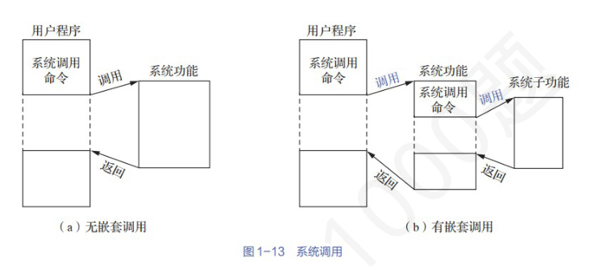

第 31 题
执行系统调用的过程涉及下列操作，其中由硬件完成的是（ ）。
A． 仅Ⅰ、Ⅳ B． 仅Ⅱ、Ⅲ C． 仅Ⅱ、Ⅳ D． 仅Ⅱ、Ⅲ、Ⅳ 答案与解析 答案：A
发生系统调用时，CPU 通过执行软中断指令让CPU 的运行模式由用户态切换到内核态，该过程与中断和异常的响应过程相同，由硬件负责保存断点和程序状态字，并将CPU模式改为内核态。然后执行操作系统内核的系统调用入口程序，该内核程序负责保存通用寄存器的内容，再调用执行特定的系统调用服务例程。综上，Ⅰ、Ⅳ由硬件完成，Ⅱ、Ⅲ由操作系统完成，选A。
教材第 117 页 第 32 题
下面关于中断、异常和系统调用的叙述中，正确的是（ ）
A． 中断、异常和系统调用均可能发生在用户态或内核态 B． 存在中断嵌套，但不存在系统调用嵌套 C． 系统调用本质还是通过中断来实现的，一个OS 的中不同的系统调用对应不同的中断入口 D． 系统调用返回时，继续执行被调用程序 答案与解析 答案：A
先看B，错误。系统调用是存在嵌套调用的，汤书中指出“像一般的过程调用一样，系统调用也可以嵌套进行，即在一个被调用过程执行期间，还可以利用系统调用命令去调用另一个系统调用。当然，每个系统调用对嵌套调用的深度都有一定的限制，如最大深度为6。但一般的过程调用对嵌套调用的深度则没有限制。图1-13所示为无嵌套调用与有嵌套调用这两种情况下的系统调用。”既然系统调用存在嵌套，那自然会产生一个想法：当发生系统嵌套调用时，当前CPU 处于什么状态？用户态还是内核态？b 图中已经给出了答案，调用时执行的是系统功能，故答案为：内核态。无论是否嵌套系统调用，只要开始执行系统调用服务程序，CPU就已经处于内核态。在嵌套情况下，比如一个系统调用中又调用了另一个系统调用，CPU依然在内核态执行。例如，一个进程在执行文件读取操作（这是第一次系统调用）的系统调用服务程序过程中，又因为某种需求（如读取文件时需要进行内存分配等其他需要内核服务的操作）触发了第二次系统调用，此时CPU仍在内核态完成第二次系统调用相关操作，完成后再继续处理第一次系统调用未完成的部分，最后将CPU状态切换回用户态，把处理结果返回给用户态进程。中断与异常的已经是老生常谈，均可在用户态或内核态下发生，故A正确。 C 错误，汤书中指出“系统调用是通过中断机制实现的，并且一个OS 的所有系统调用都通过同一个中断入口来实现。例如，MS-DOS 系统提供了INT21H 这一中断，应用程序通过该中断获取OS 的服务。” D 错误，汤书中指出“在采用了抢占式(剥夺)调度方式的系统中，在被调用过程执行完成后，要对系统中所有要求运行的进程做优先级分析。当调用进程仍具有最高优先级时，才返回到调用进程继续执行；否则，将重新调度，以便让优先级最高的进程优先执行。此时，将把调用进程放入就绪队列。”注意：本题命题参考汤小丹老师《计算机操作系统(慕课版)》1.7.1系统调用的基本概念，仅作为拓展，帮助考生了解“系统嵌套调用”概念。若无题干强调，默认无“系统嵌套调用”。

教材第 117 页 第 33 题
下列关于系统调用的说法中，正确的是（ ）。
A． 仅Ⅰ、Ⅲ B． 仅Ⅱ、Ⅳ C． 仅Ⅰ、Ⅲ、Ⅳ D． Ⅰ、Ⅱ、Ⅲ、Ⅳ 答案与解析 答案：C
Ⅰ正确，程序执行系统调用是通过中断机构来实现的，需要从用户态转到内核态，当系统调用返回后，继续执行用户程序，同时CPU 状态也从核心态切换到用户态。 Ⅱ错误，用户程序无法形成屏蔽中断指令。这里应该是形成若干参数和陷入(trap)指令。系统调用需要触发trap指令，如基于x86 的Linux 系统，该指令为int0x80 或sysenter。 Ⅲ正确，编写程序所使用的是系统调用，例如read（）。系统调用会给用户提供一个简单地使用计算机的接口，而将复杂的对硬件(例如磁盘)和文件操作(例如查找和访问)的细节屏蔽起来，为用户提供一种高效使用计算机的途径。 Ⅳ正确，用户程序通过程序接口(即系统调用)进行进程控制。操作系统实现的所有系统调用所构成的集合，即程序接口或应用编程接口(Application ProgrammingInterface，API)，是应用程序同系统之间的接口，它包括进程控制、文件系统控制、系统控制、内存管理、网络管理、用户管理、进程间通信等，所以几乎各个功能都需要用到系统调用。系统调用是操作系统提供给应用程序的唯一接口。综上分析，本题选C 选项。
教材第 117 页 第 34 题
在系统调用过程中，发生在用户态的过程是（ ）
A． 传递系统调用参数 B． 保存通用寄存器的值 C． 执行系统调用相关操作 D． 获取系统调用参数 答案与解析 答案：A
系统调用需要在传递参数后执行陷入指令进入内核态，所以传递系统调用参数发生在用户态，其它选项都是具体的系统调用处理过程，所以发生在内核态。
教材第 118 页 第 35 题
计算机系统中有些操作必须使用特权指令完成，下列操作无须使用特权指令的是（ ）
A． 修改界限地址寄存器 B． 设置定时器初值 C． 触发访管指令 D． 关闭中断允许位 答案与解析 答案：C
A：修改界限地址寄存器为特权指令，需要在内核态下执行； B：设置定时器初值属于时钟管理的内容，需在内核态下运行； C：访管指令是用户态到内核态的入口，可以在用户态下运行；关闭D：中断允许位属于中断机制，它只能运行在内核态下。故答案为选项C。
教材第 118 页 第 36 题
下列操作中，可以在用户态执行的有（ ）。
A． 2 种 B． 3 种 C． 4 种 D． 5 种 答案与解析 答案：C
其中可以在用户态执行的是Ⅰ执行除法指令、Ⅲ执行Trap（陷入）指令、Ⅳ从内存中取数和Ⅴ改变程序计数器的值（执行跳转指令）。而Ⅱ初始化中断向量表和Ⅵ关闭中断允许位（关中断）只能在内核态执行，因此选C。
教材第 118 页 第 37 题
动态重定位是在作业的（ ）中进行的。
A． 编译过程 B． 装入过程 C． 修改过程 D． 执行过程 答案与解析 答案：D
动态重定位是在作业运行到一条访存指令时再把逻辑地址转换为主存中的物理地址，实际是通过硬件地址转换机制实现的，故答案为选项D。
教材第 118 页 第 38 题
静态重定位中，负责将指令中的逻辑地址转化为物理地址的是（ ）
A． 硬件 B． 装入程序 C． 用户程序 D． 链接程序 答案与解析 答案：B
静态重定位下，程序被装入程序装入时即会实现逻辑地址向物理地址的转换，此后程序中的指令和数据的内存地址便完全确定了，因此是由装入程序完成的地址转换。
教材第 118 页 第 39 题
相对于传统的操作系统设计方式，微内核操作系统具有很多优点。下列关于微内核操作系统的描述中不正确的是（）
A． 微内核可以增加操作系统的可靠性 B． 微内核可以提高操作系统的执行效率 C． 微 D． 微内核可以提高操作系统的可拓展性内核可以提高操作系统的可移植性 答案与解析 答案：B
微内核操作系统把操作系统分为微内核和多个服务器，移植性更好，设计上更加可靠，同时服务器可以进行扩展，操作系统的扩展性更好。但是微内核操作系统的执行效率较低。这是因为在传统操作系统的设计中，用户程序直接向操作系统请求服务，而在微内核结构中，用户程序向操作系统请求服务需要经过微内核转发给服务器程序，因此效率更低。故答案为选项B。
教材第 118 页 第 40 题
下列关于分层式结构操作系统的说法中，正确的有（ ）
A． Ⅰ、Ⅱ、Ⅲ B． Ⅰ、Ⅱ、Ⅳ C． Ⅱ、Ⅲ、Ⅳ D． Ⅰ、Ⅱ、Ⅲ、Ⅳ 答案与解析 答案：C
每个层次只可以调用更低层次的功能和服务，Ⅰ错误。分层式结构操作系统，各层次相互独立，依赖性低，对某一层次的修改不会影响其他层次，但由于每一层都要对下层进行系统调用，增加了开销，造成系统效率较低，因此Ⅱ、Ⅲ、Ⅳ选项正确。所以正确答案为C 选项。
教材第 118 页 第 41 题
下列服务中不宜放在微内核中的是（ ）
A． 内存管理 B． 进程通信与调度 C． 文件系统 D． 原语 答案与解析 答案：C
微内核只提供一组必要的服务，如内存管理、进程调度、进程通信、中断处理、原语等，文件系统服务不是必要的服务，非必要的服务还有设备驱动等。所以正确答案为C 选项。
教材第 118 页 第 42 题
对于宏内核和微内核操作系统设计的区别，下面说法正确的是（ ）
A． 宏内核设计下所有内核模块都运行在内核态，微内核设计下所有内核模块都运行在用户态 B． 宏内核设计下不同模块间通信通过过程调用，而微内核设计下不同模块间通信不能通过过程调用 C． 宏内核相较微内核设计下特权级切换更为频繁 D． 微内核设计相较于宏内核设计具有更好的安全性和系统性能 答案与解析 答案：B
A 错误，微内核架构下一些内核基础模块仍然运行在内核态。 B 正确，微内核不同模块运行在不同地址空间，不同模块间通信不能通过过程调用；宏内核不同模块运行在同一地址空间，不同模块间通信通过过程调用。 C 错误，微内核将机制与实现分离在不同特权级，所以切换更频繁。 D 错误，微内核设计安全性更强但是性能更差。主要是因为进程间通信（IPC）和频繁的用户态与内核态切换开销大
教材第 119 页 第 43 题
下列关于操作系统结构的说法中，正确的是（ ）。
A． 仅Ⅰ B． 仅Ⅰ、Ⅲ C． 仅Ⅲ D． 仅Ⅲ、Ⅳ 答案与解析 答案：C
Ⅰ错误，当前比较流行的、能支持多处理机运行的OS，几乎全部都采用宏内核结构，包括Windows XP。 Ⅱ错误，模块化OS 结构的原则是：分解和模块化。I 中描述的是分层式结构设计的基本原则。 Ⅲ正确。 Ⅳ错误，微内核结构将操作系统的很多服务移动到内核以外(如文件系统)，且服务使用进程间的通信机制进行信息交换，这种通过进程间通信机制进行的信息交换影响了系统的效率，所以微内核结构设计并不会使系统更高效。一般来说，内核的内服务越少，内核越稳定。
教材第 119 页 第 44 题
在计算机系统中，操作系统通常存储在（ ）上，计算机开机后，操作系统最终被加载到 （）。
A． 硬盘；ROM B． BIOS；RAM C． 硬盘；RAM D． ROM；RAM 答案与解析 答案：C
在计算机系统中，操作系统通常存储在硬盘上，因为操作系统通常需要大量的存储空间，且需要频繁地修改和更新，因此不能将其存储在ROM 或EPROM等只读存储器中。系统开机后，操作系统的程序会被自动加载到内存中的系统区，这段系统区域是RAM，故选C。
教材第 119 页 第 45 题
在计算机系统中，操作系统的引导程序一般存储在哪个区域?
A． 硬盘 B． cache C． BIOS 芯片 D． 内存 答案与解析 答案：A
BIOS(Basic Input Output System，基本输入输出系统)是一组固化到计算机主板上一个ROM 芯片上的程序，它保存着计算机中最重要的自诊断程序、CMOS 设置程序、基本输入输出程序、系统设置信息、开机加电自检程序和系统启动自举程序，其主要功能是为计算机提供最底层的、最直接的硬件设置和控制。操作系统的引导分两步：主引导扇区位MBR 于硬盘的0 磁道0 柱面1 扇区，共512bytes，由三大部分组成：
教材第 119 页 第 46 题
BIOS 在硬件自检后，按照启动顺序将控制权交给第一位的存储设备，读取该设备的第一个扇区是（）。
A． CMOS B． MBR C． PBR D． 操作系统内核 答案与解析 答案：B
该设备的第一个扇区是主引导记录(MBR)，一般包括调用操作系统的机器码、分区表、主引导记录签名。
教材第 119 页 第 47 题
下列选项中，需要在操作系统进行初始化过程中创建的是（ ）。
A． 中断向量表 B． 文件系统的根目录 C． 硬盘分区表 D． 文件系统的索引节点表 答案与解析 答案：A
A 正确，中断向量表（Interrupt Vector Table，IVT）是操作系统初始化过程中必须创建和设置的数据结构。在x86架构中，这个表可能在系统引导早期就由BIOS设置部分，然后由操作系统接管并重建或修改。因为硬件自检需要用到中断，所以在BIOS 设置的中断向量表叫做实模式下的中断向量表，当操作系统初始化后，进行修改，构建的中断向量表叫做保护模式下的向量表，包括大部分的硬软件中断。 B 错误，根目录是在文件系统创建时（如格式化磁盘时）创建的。操作系统只需要加载即可，无需创建。 C 错误，硬盘分区表是硬盘逻辑格式化之前创建的，在OS 引导过程中，即MBR 中读取出来即可，无需创建。 D 错误，同B，索引节点表在文件系统创建时建立起来的，用来记录文件的元数据。启动时只需要加载即可。补充：OS 初始化完成的工作有： • 初始化中断机制：设置中断向量表并注册中断服务程序，设置IF 位（启用中断） •初始化内存管理系统：建立页/段表、开启虚拟内存、地址转换机制（MMU）、内存分配机制 • 初始化定时器和时钟中断 • 初始化内核数据结构：如就绪队列、内核缓存、系统调用表、设备驱动管理表 • 初始化设备驱动：探测硬件和注册对应驱动函数、供内核调用初始化VFS 层（虚拟文件系统），注册各类具体文件系统（读取超级块等）、挂载根文件系统 • • 创建首个进程（如init()）
教材第 119 页 第 48 题
在操作系统的启动过程中，需要执行下列程序：
A． ①④③② B． ③②④① C． ①③②④ D． ①②③④ 答案与解析 答案：A
自检程序（POST）：开机时BIOS 固件执行，用于检测CPU、内存、显卡、键盘等硬件是否 • 正常 •引导装入程序（也叫主引导记录MBR，在磁盘0 磁道0 盘面第1 扇区）：通电自检结束后，加载“实际的引导程序”到内存中，根据分区表加载活动分区，将控制权交给活动分区。 • 引导程序（分区引导记录PBR，活动分区的第一个扇区）：寻找并激活分区根目录下用于引导操作系统的程序。 • 加载操作系统。将操作系统加载进内存中执行。计算机加电启动过程为：自检程序→自举装入程序(引导装入程序)→引导程序→操作系统。本题选A。
教材第 119 页 第 49 题
下列关于虚拟机的描述中，正确的是（ ）
A． 仅Ⅰ B． 仅Ⅱ C． 仅Ⅰ、Ⅱ D． 仅Ⅱ、Ⅲ、Ⅳ 答案与解析 答案：B
Ⅰ错误，第一类VMM 直接运行在物理硬件之上，它自身就是硬件资源的管理者。它上面运行的是客户机操作系统，并不依赖宿主操作系统。 Ⅱ正确，第一类VMM 直接安装在硬件上，它本身就扮演着操作系统的角色，运行在最高特权级别，负责管理和分配硬件资源给上层的虚拟机。 Ⅲ错误，第二类VMM 是作为应用程序运行在宿主操作系统之上的。它不直接运行在硬件之上，而是通过宿主操作系统来间接访问和控制物理资源。 Ⅳ错误，通常情况下，第一类VMM 的性能优于第二类VMM。这是因为第一类VMM 直接控制硬件，减少了宿主操作系统带来的开销和指令转换层次。第二类VMM 由于需要通过宿主操作系统间接访问硬件，会引入额外的性能损耗。
教材第 119 页 第 50 题
下列关于虚拟机的描述中，正确的是（ ）
A． 在第一类VMM 中，真实硬件可以直接在用户态执行虚拟机中的敏感指令 B． 第二类VMM 负责把虚拟机程序的地址转换为内存中的物理地址 C． 第二类VMM 完全运行在用户态 D． 第一类VMM 能直接分配虚拟机“未抽象”的物理硬件，而第二类VMM 只能分配“抽象化”的物理硬件 答案与解析 答案：D
A 错误，在第一类虚拟机中，当虚拟机操作系统执行了一条CPU 处于内核态才允许执行的指令时，会陷入VMM。在支持虚拟化的CPU 上，VMM 检查这条指令是由虚拟机中的操作系统执行的还是由用户程序执行的。如果是前者，VMM将安排这条指令功能的正确执行。否则， VMM 将模拟真实硬件面对用户态执行敏感指令时的行为。在过去不支持虚拟化的CPU上，真实硬件也不会直接执行虚拟机中的敏感指令，这些敏感指令被转为对VMM 的调用，由VMM 模拟这些指令的功能。而在支持虚拟化的CPU 上，虚拟机管理程序检查这条指令是由虚拟机中的操作系统执行的还是由用户程序执行的。如果是前者，虚拟机管理程序将安排这条指令功能的正确执行。否则，虚拟机管理程序将模拟真实硬件面对用户态执行敏感指令时的行为。 B 错误，第二类VMM 负责把虚拟机程序的虚拟地址转换为宿主操作系统中的虚拟地址（这个虚拟地址在虚拟机os 看来是”物理地址“），再由宿主操作系统转换为物理地址。 C 错误，虽然第二类VMM本身是作为宿主操作系统上的一个应用程序启动和运行的，但为了实现对虚拟机的管理和模拟一些特权操作，它的部分组件或在某些时刻可能需要宿主操作系统的内核态服务或者以某种特权级别运行（例如，通过加载内核模块或利用宿主OS 提供的API）。它不像第一类VMM那样完全取代操作系统而运行在最高特权级，但也不能说它完全运行在用户态而不涉及任何内核态的交互或依赖.它的核心功能（如指令解释、设备模拟）大部分在用户态，但与硬件交互和资源管理离不开宿主OS 内核的支持. D 正确，第一类VMM，直接运行在物理硬件之上。这意味着它可以直接管理和分配真实的、未经过抽象的物理硬件资源给虚拟机.第二类VMM 作为应用程序运行在宿主操作系统之上.它通过宿主操作系统来访问物理硬件，因此它分配给虚拟机的硬件资源通常是经过宿主操作系统抽象和管理的“虚拟”或“抽象化”的物理硬件。
教材第 120 页 第 51 题
下列关于虚拟机的说法正确的是（ ） I．第一类虚拟机的硬件资源的管理者是宿主操作系统II．第二类虚拟机的虚拟机管理程序负责把虚拟机程序的地址转换为内存中的物理地址。 III．第一类虚拟机的敏感指令不一定执行在内核态
A． I、II、III B． I、II C． II D． III 答案与解析 答案：D
第一类虚拟机没有宿主操作系统，硬件资源的管理者是虚拟机管理程序 （VMM），I 错误；第二类虚拟机管理程序负责把虚拟机程序的虚拟地址转换为宿主操作系统中的虚拟地址（这个虚拟地址在虚拟机os 看来是”物理地址“），再由宿主操作系统转换为物理地址，II 错误；第一类虚拟机的非敏感指令执行在ring1层，而敏感指令执行在ring0 层（内核态）。理想情况下，我们希望敏感指令集等于特权指令集，对于一般RISC处理器，如MIPS，PowerPC以及SPARC，敏感指令就是特权指令，但是x86例外，但是x86 绝大多数的敏感指令是特权指令，但是由部分敏感指令不是特权指令，执行这些指令的时候不会自动trap，而是被VMM 捕获。几乎所有现代CPU都支持硬件虚拟化，这些不会trap的敏感指令，是通过允许VMM捕获并仿真敏感指令来实现的，可以在用户态执行，III 正确。 【速对答案】 DCDCCBCCBDDADDCBDCCDDACDCBCBDBCBADBCBCCCDBACABDCDADDABBDBBCBCCDDCDBDBCBBDCCCADAAABDDDCAABBBCCCADCADACADCCDCADDCDDBBBCCCDCABBCDCB
教材第 120 页